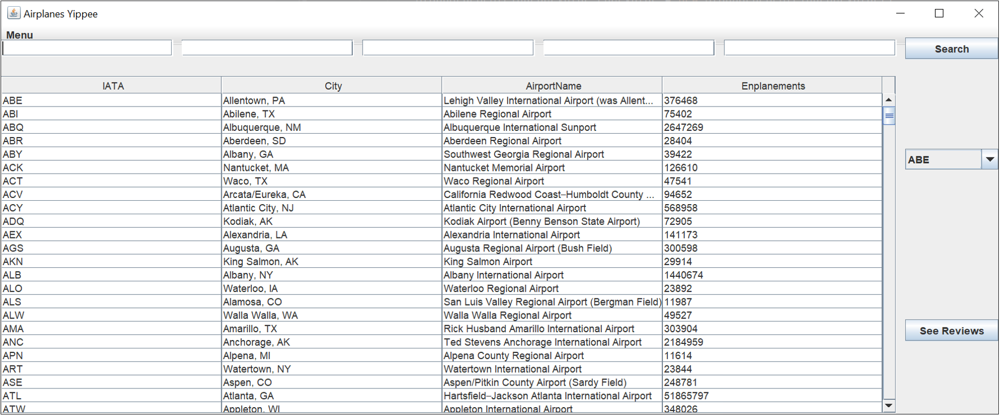
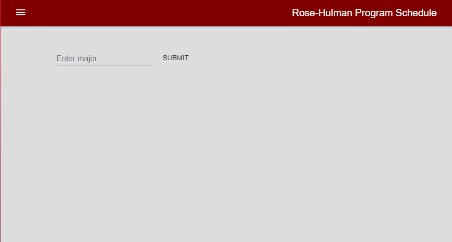

Airport Database

Delta Sigma Phi Webmaster

Schedule Planner

For my Introduction to Databases class, I worked on a project with a partner to create a database in Microsoft SQL Server and develop an application to interact with the database. My partner and I decided to make a rating system for airports and airlines using a Java application.
To populate the database with info, I exported data from Wikipedia into an Excel document. Using Apache POI and SQL stored procedures, I wrote a script to import data from Excel documents into the database.
With my partner, I worked on writing queries to create tables to store information within the database. I also wrote stored procedures to allow us to add, delete, and modify information in the database. I also wrote views that ensured a user could only access their information.
The Java application that we created contains login, search, review, and reply features. First, a user has the option to log in to an existing account or create a new account. Rather than storing passwords in plain text, a password is salted using a hash, and the salted password with the hash is stored in the database. Next, a user can access either the airport or airline table and is able to make more specific queries. These queries are done using prepared statements to prevent SQL injection attacks. After selecting something to rate, a user is presented with all existing reviews with the option to add a new review or reply to a review.
I am the Webmaster for the Delta Sigma Phi Zeta Lambda Chapter. My responsibilities include giving weekly reports on what I am working on, updating the website to be more relevant, and adding new features based on current needs.
Through this role, I have experimented with different ways of displaying information and trying to improve user experience. This has allowed me to have a more in-depth understanding of what goes into creating and maintaining a website.
Recently, I was tasked with finding a way to display all of the past composites to allow alumni to view them. To create this page, I developed different methods in JavaScript to build each part of the page. This allowed me to keep the code organized by having each method build off the other and helped me learn more about JavaScript. To display the composite in full screen, I used modal contents with onclick functions.
For my Introduction to Web Design final project, I worked with a partner to develop a web application that allows a user to create and customize various schedules based on their major at Rose-Hulman.
The main functionality of the application was accomplished using a combination of Bootstrap cards and the Firestore database. The preset schedules were stored within a collection in Firestore with hashmaps and arrays and were displayed using interactive Bootstrap cards. A user had the option to save a schedule that would be stored in another Firestore collection. They would then be able to edit and delete the schedules that had been created by the user.
Additionally, we implemented an authentication system that included both Firebase authentication and Rose-Hulman’s unique authentication. This allowed us to ensure a users would only be able to edit their own schedules by using the authentication to give a user a unique ID.

For my Introduction to Object-Oriented Programming final project, I worked with a team to develop a GUI that simulated the evolution of a population over generations using Java. Throughout this project, I practiced pair programming and got comfortable coding in a group environment.
We used various JFrames to display the different aspects of the project such as the current population and the object in the population that fits whatever arbitrary criteria set. Additionally, we created an interactive graph that allowed a user to input different settings into the graph. This allowed us to visualize how each setting impacted the evolution of the population. One example of this would be a population that used truncation and had crossover.
To wrap up the project, we created a presentation and paper to show our findings. We conducted various experiments using our GUI to see how various factors impacted the evolution of the population. We presented our findings to the class and successfully completed this project.